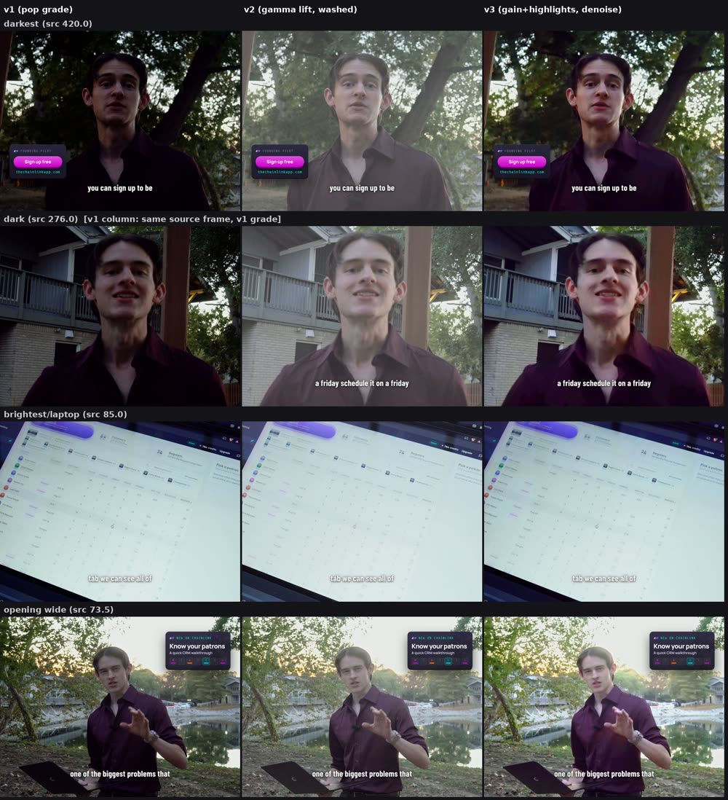
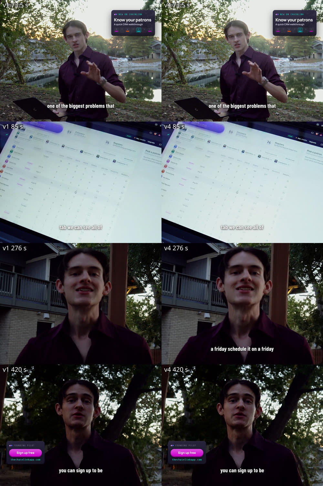
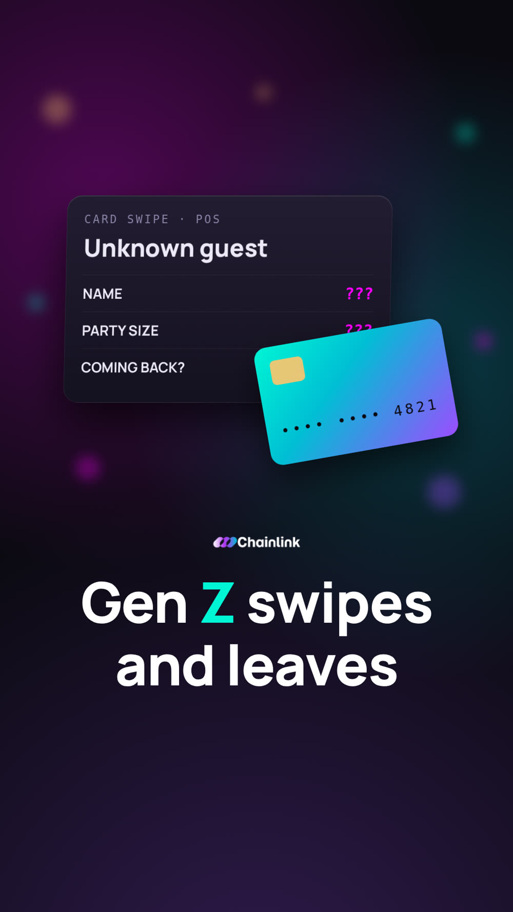
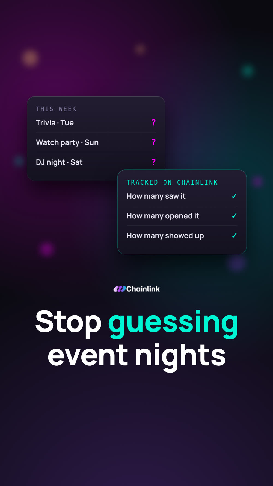
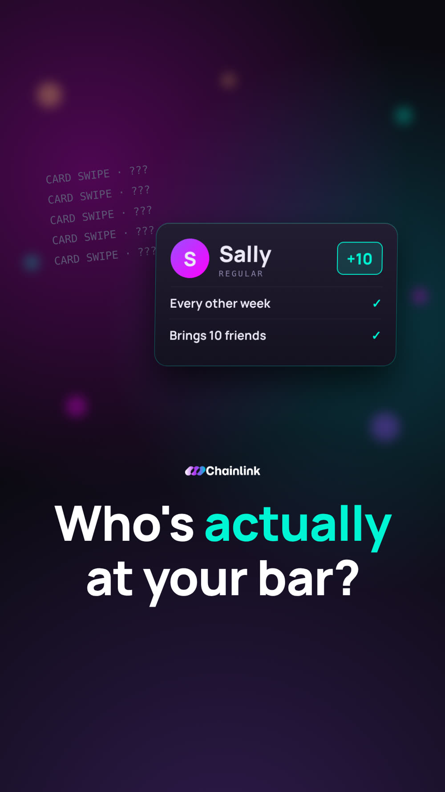
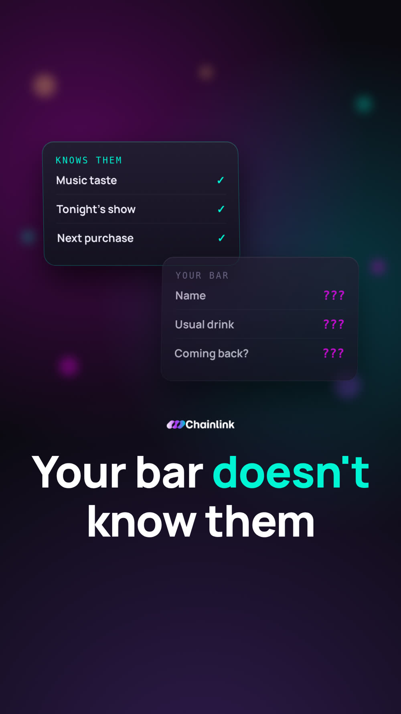
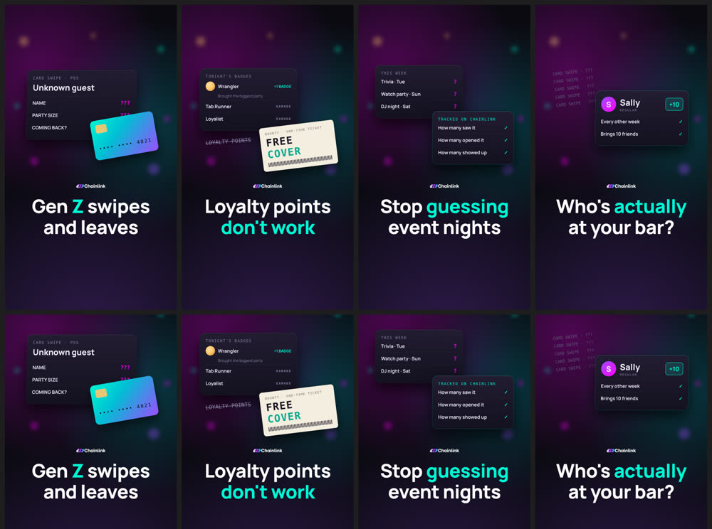

Editron, an AI video-editing agent I built and trained on Grok Bot, xAI's agent app. Later I handed its knowledge to Grok Build so it could work directly in my DaVinci Resolve timeline.
I'm Daniel Klabunde, a video producer and editor who has run Klabunde Media Company since 2020. In October 2026 I built Editron as a Grok Bot agent. Then I trained it the way you would train a junior editor: I critiqued every version it made, wrote down why each cut, take, grade or caption worked or failed, and turned those notes into rules, tools and automated checks.
Editron is a Grok Bot: an agent I created in xAI's Grok Bot app and trained through conversation, memory and skills. It edits my client videos: captions and kinetic text, A-roll take selection, B-roll, color, audio and motion graphics. It works from my footage, scripts, shot lists and reference Reels. I gave it a C-3PO persona ("Oh dear, understood, sir"), which made the long feedback sessions a lot more fun.
Vertical luxury Reels for a jewelry store launch: reference-matched cuts, brand typography, my own grade.
A nightlife app I co-founded: talking-head promos with me and co-founder Devon, product demos, and motion-graphics explainers.
My own company: cinematic talking-head panels with B-roll from my archive, captions in DIN Condensed.
Runs on Grok Bot (persistent memory, reusable skills, subagents for long renders). It edits with ffmpeg, Whisper transcription, face and gaze tracking, optical-flow shake metrics, Remotion motion graphics, fitted 3D LUTs and Python QC gates. Timeline-level work in DaVinci Resolve is handed to Grok Build.
First task: caption a Zaidi Reel from the script and the brand's fonts and colors. My first note was that it was too bland: make the key words (brand, venue, "launch party") larger, stacked and gold. It learned my cutting rhythm from five of my Resolve timelines: hard cuts only, shots about 1.5–3.5 s (average about 2.3 s).
The first full cut picked exactly the right A-roll moments, but weak B-roll from raw footage. I assigned deep cinematography research (framing, movement, light). Editron proposed comparing my own curated picks against the raw footage to learn my eye.
Chainlink promos: conservative stutter fixes, and cuts that turned janky when keyframes were set before the cut list changed. Zaidi: replace the chandelier shot, redo an "abysmal" outdoor grade, layer the voice-over, use the orbit shot. First Reel approved.
Every note so far was consolidated into one guide, with shot selection first. I added a nuance: documentary-style, off-lens delivery is a valid take as long as the eyeline is steady.
I sent my own graded export. Editron frame-aligned it with the ungraded render and fitted LUTs. It learned it had been cooling the whole image when I only take yellow out of the highlights. The same day: a voice swap (ADR), phone EQ and echo removal on a phone-call Reel.
I had Editron write an extremely detailed knowledge base so a second agent, Grok Build, could edit directly in DaVinci Resolve. Build's session log, including my real node tree, then flowed back into Editron. A root-cause retrospective of Editron's Chainlink misses produced an automated pre-delivery QC gate.
Klabunde Media added, with brand research approved before any editing. A Chainlink graphics-only explainer was approved at v5. A Reel with invented search screens was rejected; the rule became "real screens only."
Value, personal, Gen Z and Devon cuts, with notes on gaps, a repeated line, graphic timing, music level, and floating vs full-screen graphics.
Demo C0010 approved after four grade passes. C0009 rebuilt from a take map of all 29 beats in a 9-minute source, tuned v2 → v3 → v4, then approved.
Exported videos only show what an edit looks like, not how it was built. To get timeline-level precision, I transferred Editron's knowledge to Grok Build, a coding agent that worked directly in my DaVinci Resolve project.
On Oct 18, Editron compiled everything it had learned into a versioned knowledge repo for Grok Build: shot-selection rules, the feedback history, QC, fitted LUTs, audio and Resolve notes. Anything unknown was marked as such.
Build and I recut Zaidi Reel RH-4 inside Resolve Studio. Resolve's scripting API wouldn't connect on my Mac, so Build edited the project database directly with Resolve closed and confirmed every number against the inspector and viewer.
Build logged exact cut frames, zoom ramps (for example a slow 0.64→0.69 push on the opener) and my real node tree: curves → primary wheels → Glow → Vignette, with no LUT. That replaced Editron's pixel-fitted estimates for that kind of Reel.
Build's learnings log flowed back into Editron and became the RH-4 narrative rules: open mid-action, one prop carries the story, cut on completed action. Editron's v2 rebuild matched our Resolve cut.
Every render is name_vN.mp4 and never overwritten. I reply to a specific version with concrete notes, so each round is comparable.
Each correction is logged as note → rule. For example, "wobbly shot 42 s from end" became "measure background shake on every shot; replace, don't stabilize."
Dated memory facts, a brand-agnostic editing-rules skill, and a versioned git repo (shot selection, workflow and QC, color, audio, Resolve notes, per-client files).
Five of my Resolve timelines set the pacing. My graded exports were fitted into 3 LUTs (indoor, shade/dusk, sun) with mean ΔE2000 of 1.4, 2.2 and 1.7 against my grade.
I transferred Editron's knowledge to Grok Build so it could learn inside my actual DaVinci Resolve project, from my real cuts, zoom keyframes and node tree, rather than from exported files. Build's findings came back to Editron as a log. A log line becomes a rule only after I confirm it.
Repeated misses became automated checks that block delivery: clipped word tails, repeats and false starts, graphics leaving the frame, idle graphics, and length of 90 s or more.
Vague notes ("tighter", "brighter") were turned into measured targets: pause lengths, cut handles, LUFS, highlight gain. Each was confirmed on the next version.
"Take a stab at it" first drafts, research assignments when a skill was missing, and approval gates (brand research before editing).
This is a sample of the rules I articulated, grouped by craft area. Each one came from a specific failed version.
| Pattern | Example note | Check now run before delivery |
|---|---|---|
| Audio cut artifacts | "Endings clipped"; a throat clear left in | Listen to every join; level at every out-point at least 20 dB under speech |
| Stutters and duplicate lines | "And, and Chainlink…"; a repeated "it's free" | Re-transcribe a short window at every join; scan for repeated words |
| Unfinished thoughts | A sentence cut mid-thought to save time | Every segment ends on its last word |
| Graphics framing | Partial cards, items sliding off-frame, graphics over captions | Every-frame edge, clip and overlap audit: 0 / 0 / 0 |
| Invented content | An invented "$300 / night" stat | Every number traceable to the brief or a real screen |
| Wrong take | Head-down or rehearsal take | Gaze and delivery audit on every take |
| Over-processing | "Paper SFX too much"; heavy regrade | Minimal by default |
| Pacing and length | Choppy, then too slow | Shot-length table against targets |
Demo C0009 v1 had weak takes, so Editron rebuilt it from a map of every take of all 29 beats. v2 still had dead air: 43 gaps, 15.8 s in total, and 1.58 s before the first word. v3 removed it (3.6 s) but cut words off. v4 only trims pauses longer than 0.5 s and keeps about 0.26 s of breath (0.12 s after a word's tail, 0.14 s before the next onset). It also fixed three clipped words found by transcribing each cut individually. Approved.
C0010 was shot as the sun set and looked too dark. v2's big gamma lift looked like ungraded LOG footage; v3 added denoise and was still grainy. v4 kept the original punchy grade and added only about 1.18× highlight gain with no shadow lift. Approved.


Weekly-planning explainer, graphics only. Notes: no left-to-right highlight sweeps, no constant bouncing, too fast to process, and the tool's value wasn't clear. v5: one idea per beat, headline then UI, sentences held 3 s or more, smooth ease-outs without overshoot, and a problem → solution → payoff structure.
Devon's promo (C0143) went through clipped endings, a throat clear, a duplicated line, an unfinished sentence, ring highlights and partial crops. Spot-checking a few stills kept missing problems that lived in 1–8-frame windows, so the fix was an every-frame audit that has to report zero edge and zero clip frames.
Zaidi RH-4 v1 matched the reference shot for shot as a montage. My recut with Grok Build in Resolve turned it into one evening carried by a coffee cup: open mid-action, jewelry only on a hand doing something, cut on completed action. v2 is Editron's rebuild from those lessons.
The very first job. The captions started too bland; I asked for the trend-style stack with gold key words. Later passes swapped her lines by ADR while keeping the caller, music and SFX, restored a word that dropped out, added a phone-voice EQ, and removed echo with dereverb.
| Problem | Solution |
|---|---|
| Weak B-roll picks from raw footage | Cinematography research plus an 11-point shot checklist: person, steady, purpose, direction, clean, unique, framing, timing, position, light, flag |
| Janky cuts and drift | Plan in frames at the source rate (29.97 ≠ 30); rebuild keyframes after every cut change |
| Wrong action direction | Compare the bowl before and after each hand visit |
| Wrong speaker assumed | Confirm the speaker from frames before writing copy |
| Flaky transfers from an offline machine | Resumable progress files, md5 checks, sources pre-downloaded |
Brief: no faces, four individual files.





I designed and trained Editron on Grok Bot, then extended it to Grok Build for timeline-level work in DaVinci Resolve. I'm also CEO and executive producer of Klabunde Media Company since 2020: shooting with professional cameras, drones and lighting, then editing and grading in DaVinci Resolve for luxury brands and real estate. Former creative director at Creativify / Sprint Socials (300+ creators), co-founder and CMO of Chainlink, open-source contributor to Omarchy Linux, and self-taught in software, AI and robotics.
This project is what an AI Tutor for video does every day: watch a sequence, say exactly why it works or fails, and turn that judgment into data a model can learn from.